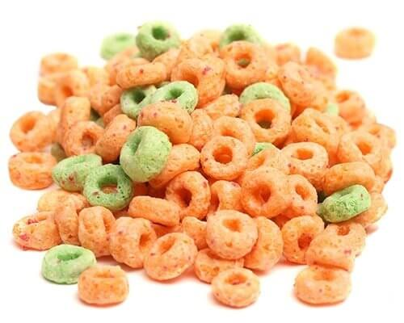

Easy Apple Jacks

Description
Crunchy, sweetened multi-grain cereal with apple and cinnamon.
Directions
- Pour the Apple Jacks from the box into a bowl, until it is almost full.
- Pour milk into the bowl making sure not to overflow any Apple Jacks.
- Enjoy your Apple Jacks before they get too soggy for best results.
Home